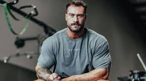
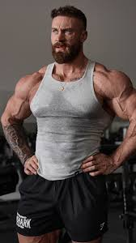
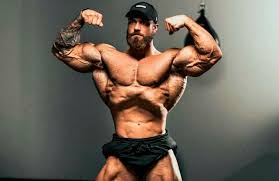
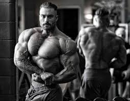
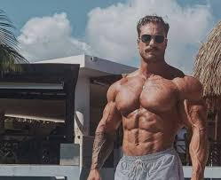
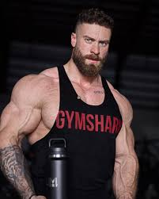
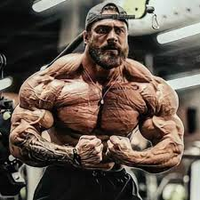

Chris Bumstead Kimdir?
Christopher Adam Bumstead (2 Şubat 1995 doğumlu), Kanadalı IFBB profesyonel vücut geliştirmecidir.
Bumstead, 2019, 2020, 2021,2022 ve 2023 Mr. Olympia Classic Physique yarışmalarını kazanmıştır ve bu unvanı elinde bulundurmaktadır.
Ayrıca 2017 ve 2018 yıllarında da ikinci olmuştur. Çoğunlukla Cbum takma adıyla anılır.


.jpeg)
Yarışma Geçmişi
- 2016 IFBB Kuzey Amerika Şampiyonası, Ağır Sıklet, 1. (IFBB pro kartını kazandı)
- 2016 IFBB Dayana Cadeau Classic, Klasik Fizik, 3.
- 2017 IFBB Pittsburgh Pro, Klasik Fizik, 1.
- 2017 IFBB Toronto Pro, Klasik Fizik, 1.
- 2017 Mr. Olympia, Klasik Fizik, 2.
- 2018 Mr. Olympia, Klasik Fizik, 2.
- 2019 Mr. Olympia, Klasik Fizik, 1.
- 2020 Mr. Olympia, Klasik Fizik, 1.
- 2021 Mr. Olympia, Klasik Fizik, 1.
- 2022 Mr. Olympia, Klasik Fizik, 1.
- 2023 Mr. Olympia, Klasik Fizik, 1.
- 2024 Mr. Olympia, Klasik Fizik, 1.
- "cbumfitness". cbumfitness (İngilizce). 29 Ocak 2022 tarihinde kaynağından arşivlendi. Erişim tarihi: 16 Mayıs 2022.
- "FOCHBY - YouTube". www.youtube.com. 8 Temmuz 2018 tarihinde kaynağından arşivlendi. Erişim tarihi: 16 Mayıs 2022.
- "2016 IFBB North American Championships | NPC News Online". contests.npcnewsonline.com. 4 Eylül 2016 tarihinde kaynağından arşivlendi. Erişim tarihi: 1 Temmuz 2021.
- "2016 IFBB Dayana Cadeau Classic | NPC News Online". contests.npcnewsonline.com. 26 Ekim 2016 tarihinde kaynağından arşivlendi. Erişim tarihi: 1 Temmuz 2021.
- "2017 IFBB Pittsburgh Pro | NPC News Online". contests.npcnewsonline.com. 11 Mayıs 2017 tarihinde kaynağından arşivlendi. Erişim tarihi: 1 Temmuz 2021.
- "2017 Toronto Pro Supershow Scorecards | IFBB PRO" (İngilizce). 1 Ekim 2019 tarihinde kaynağından arşivlendi. Erişim tarihi: 1 Temmuz 2021. Yazar |ad1= eksik |soyadı1= (yardım)
- "2017 Mr Olympia Results & Surprises". Old School Labs (İngilizce). 18 Eylül 2017. 9 Temmuz 2021 tarihinde kaynağından arşivlendi. Erişim tarihi: 1 Temmuz 2021. Yazar |ad1= eksik |soyadı1= (yardım)
- "2018 Mr. Olympia Results & Surprises". Old School Labs (İngilizce). 18 Eylül 2018. 12 Ekim 2018 tarihinde kaynağından arşivlendi. Erişim tarihi: 1 Temmuz 2021.
- "Chris Bumstead Wins 2020 Classic Physique Olympia". BarBend (İngilizce). 20 Aralık 2020. 20 Aralık 2020 tarihinde kaynağından arşivlendi. Erişim tarihi: 1 Temmuz 2021.
- "Three-Peat — Chris Bumstead Wins 2021 Classic Physique Olympia". BarBend (İngilizce). 10 Ekim 2021. 11 Ekim 2021 tarihinde kaynağından arşivlendi. Erişim tarihi: 11 Ekim 2021.
- "Chris Bumstead Wins 2022 Classic Physique Olympia, Completes Four-Peat". Breaking Muscle (İngilizce). 18 Aralık 2022. 18 Aralık 2022 tarihinde kaynağından arşivlendi. Erişim tarihi: 18 Aralık 2022. Yazar |ad1= eksik |soyadı1= (yardım)
- Patuto, Greg (6 Kasım 2023). "2023 Classic Physique Olympia Results". Generation Iron Fitness & Strength Sports Network (İngilizce). 5 Kasım 2023 tarihinde kaynağından arşivlendi. Erişim tarihi: 6 Kasım 2023.
Bodybuilding Kasları Güçlendirir
- Vücut geliştirme son yıllarda daha çok kişi tarafından yapılmaya başlandı.
- Akla ‘çok kaslı olmak’ olarak gelen vücut geliştirme, hem kadınlar hem de erkekler tarafından yapılıyor.
- Peki nedir bu vücut geliştirme? Vücut geliştirmenin zararları var mıdır? Acıbadem Sports Spor Müdürü İnanç Akbaş vücut geliştirme ile ilgili merak edilenleri anlattı.
Vücut Geliştirme Ne Demek?
- ‘Bodybuilding’ yani vücut geliştirmek; ağırlık kaldırma, kalori alımı ve diğer unsurları bir araya getirerek kasların geliştirilmesi demektir.
- Bir spor olan vücut geliştirme, 50 yaşındaki bir kişinin haftada 3 gün düzenli sabah koşusu yapması gibidir.
- Yani bir kişi haftada 3 gün sabahları bir fitness merkezinde ağırlık çalışarak ve vücudunu geliştirerek spor yapmış olur.
- Kendi sağlık problemlerine göre herkes vücut geliştirme yapabilir. Profesyonel anlamda bir vücut gelişimi için bunun bir eğitmenle birlikte, kişiye özel oluşturulan takipli bir program ile yapılması ve daha efektif bir sonuç alınması önerilir.
- Ancak profesyonel olarak vücut geliştirme yapılmasa da sporun günlük yaşama düzenli bir şekilde dahil edilmesiyle sağlıklı olmak sağlanabilir. Yani evde vücut geliştirme yapılabilir.
Vücut Geliştirmek için Hormon Takviyesi Almayın
- Dışarıdan hormon takviyesi almadan, doğal olarak yapılıyorsa vücut geliştirme sağlıklıdır. Çünkü kaslarınız geliştikçe daha kuvvetli, daha dayanıklı ve daha sağlıklı görünebilirsiniz.
- Bu nedenle dışarıdan takviye alarak hormon sağlığınızı bozmadığınız takdirde uzmanlar tarafından da önerilir.
Vücut Geliştirme Programı Kuralları Var mı?
- Vücut geliştirmede en çok dikkat edilmesi gereken; acele etmemektir. Kaslar yeterli düzeyde güçlenmeden sınırların üstünde ağırlık kaldırmaya çalışmamak, ısınmadan egzersiz yapmamak, steroid ilaçlar kullanmamak gerekir.
Vücut Geliştirmek, Ağırlık Kaldırmak Değildir?
- Vücut geliştirmek için ağırlık kaldırmak şart değildir. Kendi vücut ağırlığımızla bile egzersiz yapabiliriz.
- Bu nedenle birçok egzersiz yapılabilir.
Vücut Geliştirme Hareketleri
Bu kapsamda birbirinden farklı egzersiz tipleri vardır. Başlıca egzersizler şunlardır:
- Squat
- Push up
- Lunge
- Crunch
- Plank
- Jump squat
- Jumping jack
- vb.
Vücut Geliştirmede Beslenme
- Her spor branşında olduğu gibi bu sporda da beslenme çok önemlidir. Karbonhidrat, protein ve yağlar dengeli bir biçimde vücuda alınmalıdır. Dengeli beslenen bir sporcu protein tozuna da ihtiyaç duymaz.
Aşırı Vücut Geliştirmenin Zararları
- Sporda denge çok önemlidir. Her spor branşında olduğu gibi vücut geliştirmede de aşırıya kaçmak vücuda zarar verir.
- Bu nedenle bu sporu da aşırı yaparak eklemlerinize zarar verme ihtimali vardır. Dikkat edilmemesi halinde eklemlerin dışında kalbin yorulması, kas yırtıkları, aşırı yorgunluk, bağışıklık sisteminin düşmesi hatta uyku düzenin bozulmasına neden olabilir.
- Benim önerim; haftanın en az 4 günü ağırlık çalışıp, beslenmenize ve gece uyku düzeninize dikkat edin.
- Bu parametreleri yaptığınız takdirde gayet düzgün ve sağlıklı bir vücuda kavuşursunuz.
REKLAM
Ekar HAFRİYAT İNŞAAT A.Ş
Ekar HAFRİYAT
RESİMLER




